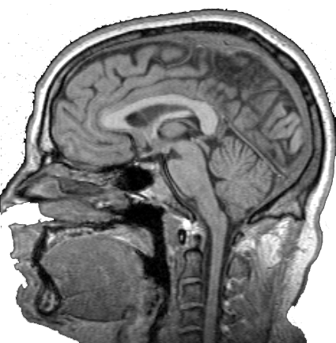

 Welcome to Brain Picker!
Welcome to Brain Picker!
Made by the fine people over at the Teaching & Learning Lab in Stony Brook University.
Press next for a look around Before we dig in to the brain, let's check our monitors.
Before we dig in to the brain, let's check our monitors.- This monitor will tell you which part of the Brain to select, and how many points you should use.
Be sure to check this after answering each question because it changes. - This is the Question Selection Menu!
Click a button to pick that question, then complete it! - Each button will be highlighted yellow when you pick it.
When you've completed a question correctly, the button will be
highlighted green. Answer it incorrectly and it will appear red. - This monitor keeps track of your status as you play, look here for the Submit button when you've placed all your points!
 Great! Now let's look at how to traverse our tomography.
Great! Now let's look at how to traverse our tomography.- The slider will allow you to move up and down through our brain.
- Alternatively you can click on any layer in this column to move to it.
The boxes will change color if there is a point on that layer. - Up here we have a sagital view of the brain.
- This line tells you where vertically the axial slice you're looking at is in the brain!
- Last but not least, this is where you'll see and select points on different sections of the brain.
 Click anywhere on the brain to place points.
Click anywhere on the brain to place points.
Make a mistake?
Click on one of your points to delete it. Your last click will always replace the last marker.
Your last click will always replace the last marker. Okay, that's about it!
Okay, that's about it!
Start clicking around on the screen to place some points.
Good luck!